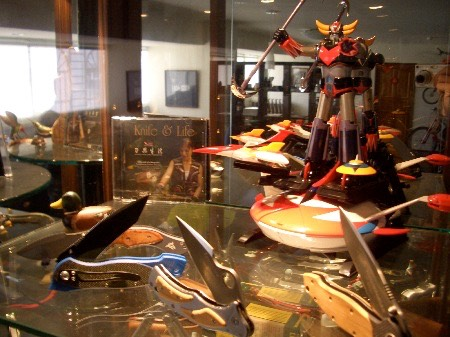

這是一個好日子！終於見到刀與生活雜誌的廖崇淵和潘帥勳。
和他們相談甚歡，也從那邊接收了滿滿的物品。
包括一個多功能的LED燈，這個可以吸附在單車上、掛在車尾、綁在頭上或是掛在胸前。
可以當手電筒，以及夜間照明，還有求救SOS的摩斯碼三長兩短閃爍的功能，超讚！
三公升裝的水袋也拿到手了，看起來比想像中來的要小，這樣子騎車喝水就比較輕鬆。
不用拿水壺、轉開蓋子、仰著頭喝、扭緊蓋子放回去那麼麻煩，只要把吸管拉到肩膀旁邊，渴了就可以吸兩口。
但我還是會多帶兩個單車水壺，水永遠不會帶太多，只會渴到沒水喝很痛苦而已 ~_~
還拿到一個很可愛的日本計算機，大概只有小紅帽的奶奶那麼小，很迷你。
分為上下兩個螢幕，只要輸入匯率，就可以直接換算當地物價成為本地的物價。
這樣只要把匯率表給寫清楚的話，到時候要買東西也比較有個概念價位是多少錢！
一大片亮黃色的反光貼紙，這我再思考一下需要貼在什麼地方才不會被晚上開車的白目撞到？
嗶～嗶～嗶～！的高音哨。不知道為什麼一吹哨子就會想起憲兵的交通手勢指揮操 =..=
奇異筆一隻，除了奇異筆之外，我還會多帶很多的原子筆，因為崇淵他們說，這些筆呀、打火機的，
對偏遠地方的人來說，都可以當作是友好邦交的小禮物，只要行李不會過重的話，那我就多帶幾個上路。
還有刀與生活的KNL臂章，等我拿到單車之後，我再親手把它縫製到包包上頭。
以及一個很實用的背包，主要就是要來背水袋用的。
也可以收納我私人的行李，像是護照、錢，這些儘可能不要離開自己太遠的東西。
它背包袋的設計很有趣，可以背直的、背斜的或是背橫的，還有拉鍊防止被奇怪的人硬拉開的機關。
充滿巧思的設計，也是出自總編之手，這樣的包包很適合單車旅行，只可惜市面上應該買不到了。
一只高檔的axis手錶，結合時間、鬧鐘、海拔高度計、溫度計、氣壓計、天氣預報、碼表、指南針等多中功能於一身。
（整個也太多功能了吧！）原來我住的房間海拔高度是122公尺，這也算是冷知識之一吧。
而且時間跟海拔高度的部份都已經調矯過了，只要拿起來就可以直接戴 T_T
（去夜市買鬧鐘的時候，第一件事情不都是要先調時間然後裝電池嗎？）
真的好幾年沒有戴手錶了，從今天這一刻開始，就要開始戴在身上，習慣它的存在和熟悉操作性。
防身的物品，收到帥勳贊助一個高壓的CS摧淚瓦斯。
什麼是CS摧淚瓦斯呢？網路上可以找到基本的介紹，轉載一段如下：
毒氣名稱：CS 瓦斯（催淚瓦斯）
效用：
使黏膜組織分泌液體，如眼睛分泌眼淚、鼻子分泌鼻涕、嘴巴流口水等
會出現咳嗽、噴涕、反胃等症狀 且會造成皮膚剌痛，簡單的說…使用後會像「康安」一樣
使用過程：
連遠在20公尺處的下風處，也能感受到它的效果，更別說身處其中的感受了
短短40秒，有讓人感到「度秒如年」的感受
而上述症狀因人而異
有人眼淚、口水直流，鼻涕的長度可以達到50公分以上
而且平常不使用的時候，它看起來只像是一般的手電筒或是粗一點的筆而已。
若是遇到想打劫的惡人的話，在不見血的情形下，這個東西可能是求生的法寶了。
除了惡人，路上難免也會遇到一些惡狗，本來我只能想到在路上撿一些石頭。
被狗追就用石頭丟它，或是狠狠地踹它，現在多了這個利器，要是真的有狗來追我的話，我會讓牠後悔莫及的。
這是防身用品一，CS瓦斯，防身用品二呢，就是一把刀與生活借出的好刀子了。
（真的是整個家裡面都是收藏刀子呀 @@"）

我接收了一把很漂亮的折疊刀，這把刀會是一路上的好工具。
跟手錶已經調過時間一樣，刀子部份也很貼心的附上了迷你磨刀石，希望這把刀是備而不用。
帶在身邊，總比需要的時候，什麼都沒有要來的保險。
除了上述的物品之外，還從總編手中拿了一整套的刀與生活雜誌。
這是一套非常好看的雜誌，內容跟美編都很出色，只可惜已經收掉了，希望能夠再有重現江湖的一天。
PS.小紅帽的奶奶之所以很小，是因為她的奶奶被大野狼吃掉了。
Blog友情連結+2，網路力量大，而且從別人的文字中聽到關於自己的描述，
那感覺真是奇妙 @~@，有一種，『這個真的是在講我沒錯吧？』的感覺，嗯....真的是在講我嗎 = ="
贊助款項的部份，本來計畫用一個月的時間募到這筆錢，現在離目標十萬元只差一小步了。
到時候十萬元滿了，超過的部份，會在基金會的律師見證之下捐做公益使用。
今天收到了數筆款項：瑞欽是以土壤污染整治為研究議題的碩士班學生。
他也常跟他的小學生講我的事情（教壞小朋友@@"），築夢踏實，到底夢這樣虛幻的東西該怎麼築？
而真的用力踏下去，夢不會垮嗎？其實我都是有點擔心，擔心的時候，發現自己都是同在原地胡思亂想。
這時候通常只要在去找點新的事情做，就不會老是陷入死胡同中拉拔。
我都只檢查中國信託的銀行帳戶匯款情形（因為它有線上銀行）郵局的部份到目前還沒有去刷本子，
所以才會漏了這筆1000元款項，還好沒有造成誤解，真是可喜可賀，瑞欽你可以跟你的小朋友說，
那個大哥哥又要去做傻事了，可以少玩一點跑跑卡丁車，到時等著看好戲 :D
Marvin說因為我的緣故，讓他對單車產生興趣，又因為單車的緣故，居然讓他甩了十幾公斤的贅肉！
（怎麼感覺很多人看到這一句就準備要出門去買單車的感覺）
關於這一點我也覺得很好奇@@"單車真的這麼猛嗎？難道這就是我沒有變成大胖子的關係？
謝謝Marvin大方的贊助了五千元這樣離十萬大關又跨進了一大步。
奇榮兄也贊助了660元（這樣的數字是有什麼特別含意嗎？）
其實選擇安逸的日子並沒有什麼不對的地方。反而像我這樣子的人才會被覺得奇怪跟不被理解。
安逸的生活也可以很轟轟烈烈，差別只在看世界的角度上。
其實在決定要出發之前，我也抉擇了很久很久，我還寫了一篇『年歲與抉擇』的日誌。
或許換個念頭的我，現在正拿著新的合約，而不是計畫單車旅行，常常一念之間就會決定一輩子的步伐。
很久以前聽侯文詠的有聲書『....回想年輕的時候，那些際遇上的變化，真是有如急轉彎，稍微一不小心，就會掉到山谷下.....』
美國喬治亞州的交換學生，多多，他才17歲，好年輕。
我十七歲的時候也是在書中打滾，那時候念五專，考試不是一百分就是九十八，
學期總成績第一名如果不是我，那大家會懷疑可能是從缺，從努力讀書中我也發現了我的成就所在。
學海無涯，離開學校了我也是不停的在看書，只是我能擺脫課本的壓迫，選擇自己想念的東西。
目前多多還是高中生，這段時間是找出自己興趣所在的最好時間。
等你找到了自己要的方向，那上了大學之後，會很過癮的！因為都是你想要學習的東西。
目前可能會有點苦，但是當學生就是這樣，我彷彿昨天還在跟飲料店的老闆抱怨，
為什麼我要參加高中聯考！？但是一晃眼，我已經離開學校了。
要把握住現在的每一瞬間，因為他們隨時一晃眼就都消逝，到時候你手中抓不住什麼，
唯一會留下的就只有你的腦袋裡所吸收的、所體驗的部份。
要是你能有機會的話，我會鼓勵你去參加海外志工活動，你爸媽大概會把我殺了，
因為他們讓你辛苦出國當交換學生絕對不是希望你去當志工，可是這對年輕人來說，是不可多得的絕佳學習機會。
謝謝你的十七塊美金，每一塊錢都代表你的歲數，提醒你自己已經快長大了，
問問自己，想要些什麼？
.
.
.
.
有答案之後，再問問自己，該怎麼去達成？